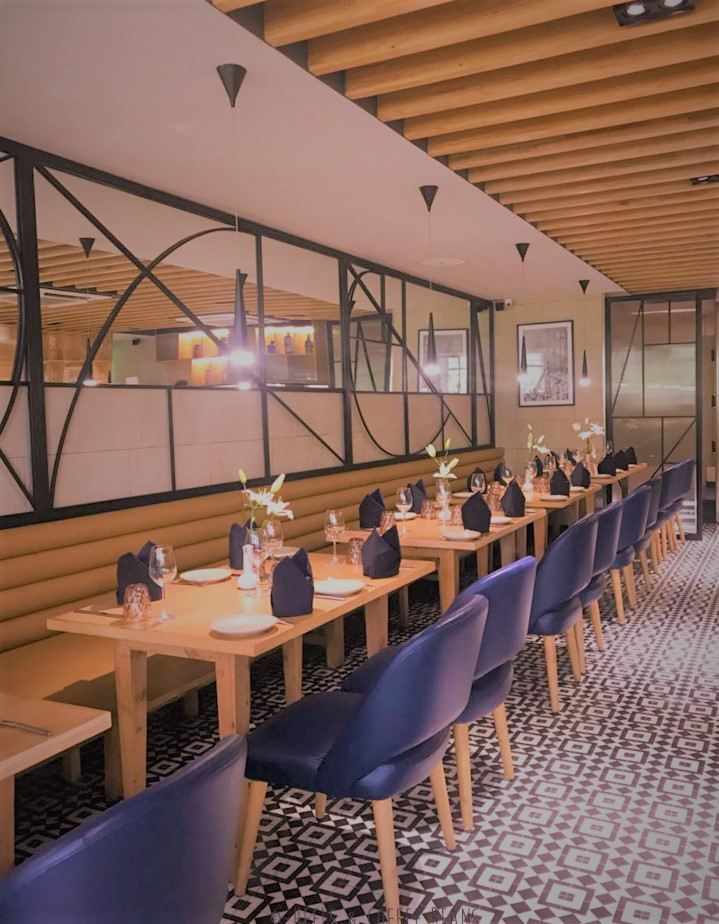

The Azubi Restaurant is a German-based Restaurant which provides it's cuustmers with both local and continental dishes.It's headquarters is an Bielefeld in Germany.
The Image below is an interior view of the Restaurant with a caption
The Azubi Restaurant -Bielefeld
You will find all the various branches grouped under the countries
Ghana
Ethiopia
Afghanistan
The Azubi Restaurant provides both local and continental dishes. Some of which include :
Pease, feel free to send us your feedback,recommendations or concerns by filling-in the form below>
The C.E.O, in an interview was asked for his motivation in bringing up this restaurant. This is what he said:
Honourable Yaw Nana Oduro
© Azubi Restaurant-2020.website: https//github.com/odurusphp/testingazubigit/